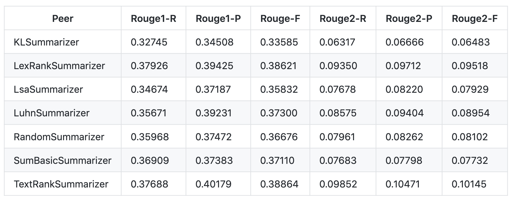

RESEARCH
- Home
- Research
Project Research
General Chatbot
Chatbot applications haven been widely utilized in various
areas, serving for either business, commercial, political or
entertaining purposes.There are numerous successful
predecessors developed by well-known companies, from Google
Now, Apple’s Siri to Microsoft’s Cortana, where we can learn
plenty of design ideas and technical solutions.
Having had a research on some existing ChatBots, we evaluate
a good chatbot by the following features:
- Precise perception of users’ needs
- Prompt and correct feedbacks to users' needs
- Friendly UI and dialogue design
There are two main categories of ChatBots, one is rule-based
chatbot, also known as decision-tree bot, the other is
AI-based chatbot, we chose to make AvaBot rule-based
regarding its task-oriented property and the time limitation
of our development. However, we also referred to the idea of
AI-based chatbots so that AvaBot is able to understand
intents and entities of a question serving for its
question-answering feature.
Document Processing Bot
AvaBot’s functionalities lay largely on document processing, we accordingly conducted a research over existing document processing bots on the market. Currently, only a small number of bots are supporting this feature, where the maturest one is IQ Bot by RPA which aims to automatically classify, extract and validate information from business documents and emails.
IQ Bot is powered by computer vision, natural language processing and machine learning according to its website, which are mature and sophisticated AI technologies that we could adopt from, however, the bot’s usability is constrained by its strict prerequisites and use cost, specifically, users have to pre-download plug-ins to run the bot and will be asked to create learning instances themselves, which is highly unfriendly to the non-professionals and those with little ML knowledge. Those were the weak points where AvaBot could surpass it.
Technology Research
Framework
We started the development of AvaBot by researching
through some of the best bot development frameworks
including MS Bot Framework by Microsoft, IBM Watson Conversation by IBM and Amazon Lex by Amazon. After
deliberate considerations of their pros and cons, we
decided to choose MS Bot Framework as our main
development tool.
MS Bot Framework has its unique advantages in the
following aspects:
-
Easy to host:
it is supported by Azure Bot Service, which provides serverless compute resources to host bots. -
Powerful APIs:
alongside the framework itself, Microsoft has an impressive 22 machine learning APIs that can be utilized for natural language processing and useful tools, in particular, the QnA maker tool which would allow us to easily establish a question-answer pair database (knowledge base). -
Multi-channels:
the Microsoft Bot Framework connects to various social conversation channels such as MS Teams, Twitter, and Skype and can run on website and custom apps. -
Developer-friendly:
it has SDKs of multiple programming languages, where C#and Node.js are the most mature ones. The SDKs are well-documented and there are a variety of samples provided. -
Cost-effective:
Avanade provided with us budget for using azure resources. There is also azure student credits.
Compared to IBM Bot Framework, which is cost-consuming
and lack of guidance to novice developers, and Amazon
Lex, which has the limitations in terms of few channels
and high dependency and demand for preparation of
dataset, MS Bot Framework became our ultimate solution
out of its superior usability, sustainability and
extensibility.
API
To guarantee the accuracy of image recognition, we
utilized the Azure Form Recognizer API, which helps in
extraction of text, key/value pairs, and tables from
types of documents.
There are 3 companies
(Microsoft - Azure, Google - GCP, Amazon - AWS) that
provide such service, where Azure Form Recognizer is of
the best accuracy, since it has the possibility to find
the bounding box (cells’ or words’ coordinates) using
OCR and analyses the fastest (3s per 5), compared to GCP
(1h14min per 10) and AWS (52min per 5) (Cazton, 2021).
Next: Languages
Node.js
 We use node.js for the development of main bot
structure. The reason is that node.js not only inherits
all the advantages that Javascript has, i,e, better
efficiency, good code performance and rich free tools,
but is also awesome at Non-blocking Input/Output and
asynchronous request handling, which is extremely useful
when developing real-time, multi-user applications as
ChatBots. This also makes node.js natively suited to
making calls to external APIs with the help of libraries
like Axios, which would allow us to integrate functions
written in other languages easily to AvaBot.
We use node.js for the development of main bot
structure. The reason is that node.js not only inherits
all the advantages that Javascript has, i,e, better
efficiency, good code performance and rich free tools,
but is also awesome at Non-blocking Input/Output and
asynchronous request handling, which is extremely useful
when developing real-time, multi-user applications as
ChatBots. This also makes node.js natively suited to
making calls to external APIs with the help of libraries
like Axios, which would allow us to integrate functions
written in other languages easily to AvaBot.
Python
 When it comes to natural language processing as required
feature for AvaBot, there is no better choice than
python. we chose to use python for the explore of
solutions for document processing as it is flexible,
usable, and of tons of powerful third-party libraries
that can be utilized for NLP, for example, Natural
language toolkit (NLTK) is the most popular library for
natural language processing (NLP) which was written in
Python and has a big community behind it, which comes
with many corpora, toy grammars, trained models, etc.
The document processing features inhabited by AvaBot are
mostly achieved by functions written in python and
integrated to it by RESTful APIs.
When it comes to natural language processing as required
feature for AvaBot, there is no better choice than
python. we chose to use python for the explore of
solutions for document processing as it is flexible,
usable, and of tons of powerful third-party libraries
that can be utilized for NLP, for example, Natural
language toolkit (NLTK) is the most popular library for
natural language processing (NLP) which was written in
Python and has a big community behind it, which comes
with many corpora, toy grammars, trained models, etc.
The document processing features inhabited by AvaBot are
mostly achieved by functions written in python and
integrated to it by RESTful APIs.
Next: Algorithms
Text-Summary Methodology
AvaBot is able to give what a document is about by summarizing it, it is therefore critical that we choose the right text-summarization method to yield reliable results.
In general, we applied extractive summarization instead of risking for abstractive summarization for the reason that current abstractive summarizing algorithm are less stable and of high demand of training, time and computational power, where Google’s open-source abstractive text summarization architecture, Textsum, requires training for over million time-steps to successfully reproduce the reported result (Pranay, Aman and Aayush, 2017), compared to which extractive summarization is more reliable, efficient and of the advantages it respects and reflects more honestly the original documents.
Out of the well-established extractive text
summarization algorithms, we turned to TextRank
Algorithm, which produced better outcomes compared to
other methods when tested on MultiLing2015 training
corpus.

Technical Decisions
Having researched through different technologies and methodologies, balancing between their benefits and drawbacks, we drew our final conclusions on how AvaBot was to be made up.
| Tech | Decision |
|---|---|
| Bot Framework | Microsoft Bot Framework |
| Language | Node.js & Python |
| External API | Azure Form Recognizer |
| External Tool | Azure QnA Maker |
| Doc-Summary | TextRank Algorithm |
| Doc-Query | QA system based on free text |
| Image-Recognition | OCR |